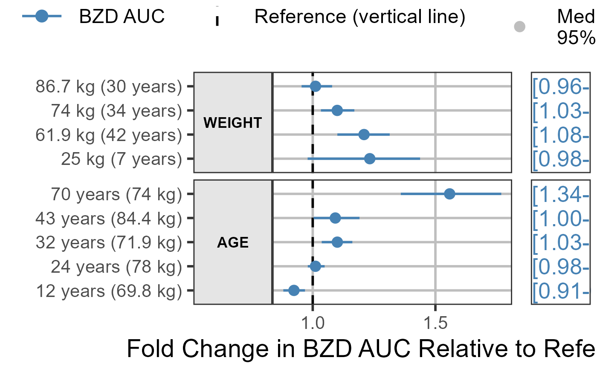
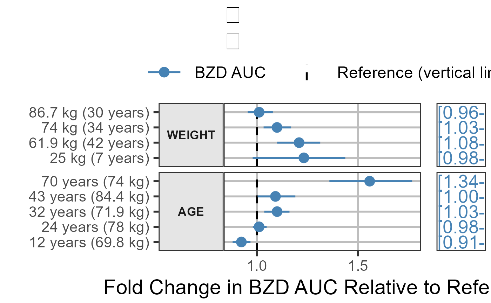
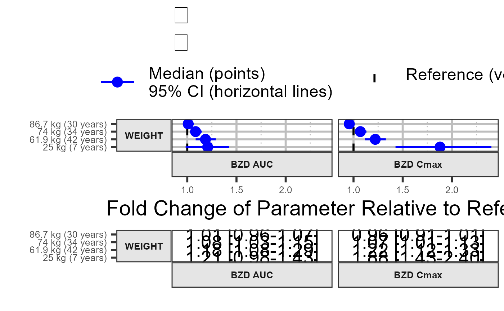
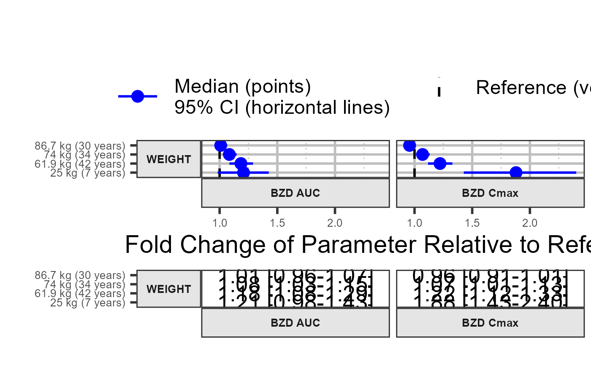

Produce forest plots to visualize covariate effects
forest_plot( data, facet_formula = "covname~paramname", xlabel = "", ylabel = "", x_facet_text_size = 13, y_facet_text_size = 13, x_facet_text_angle = 0, y_facet_text_angle = 0, x_facet_text_vjust = 0.5, y_facet_text_vjust = 0.5, x_facet_text_hjust = 0.5, y_facet_text_hjust = 0.5, xy_facet_text_bold = TRUE, x_label_text_size = 16, y_label_text_size = 16, break_ylabel = FALSE, y_label_text_width = 25, table_text_size = 7, base_size = 22, theme_benrich = FALSE, table_title = "", table_title_size = 15, ref_legend_text = "", area_legend_text = "", interval_legend_text = "", legend_order = c("pointinterval", "ref", "area", "shape"), combine_area_ref_legend = TRUE, combine_interval_shape_legend = FALSE, legend_position = "top", show_ref_area = TRUE, ref_area = c(0.8, 1.25), show_ref_value = TRUE, ref_value = 1, ref_area_col = "#BEBEBE50", ref_value_col = "black", ref_value_size = 1, ref_value_linetype = "dashed", interval_col = "blue", interval_size = 1, interval_fatten = 4, bsv_col = "red", bsv_text_id = c("BSV", "bsv", "IIV", "Bsv"), interval_bsv_text = "", strip_col = "#E5E5E5", paramname_shape = FALSE, paramname_color = FALSE, legend_shape_reverse = FALSE, facet_switch = c("both", "y", "x", "none"), facet_scales = c("fixed", "free_y", "free_x", "free"), facet_space = c("fixed", "free_x", "free_y", "free"), facet_labeller = "label_value", label_wrap_width = 55, facet_labeller_multiline = FALSE, strip_placement = c("inside", "outside"), strip_outline = TRUE, facet_spacing = 5.5, major_x_ticks = NULL, minor_x_ticks = NULL, x_range = NULL, logxscale = FALSE, show_yaxis_gridlines = TRUE, show_xaxis_gridlines = TRUE, show_table_facet_strip = "none", table_facet_switch = c("both", "y", "x", "none"), show_table_yaxis_tick_label = FALSE, reserve_table_xaxis_label_space = TRUE, table_panel_border = TRUE, table_position = c("right", "below", "none"), plot_table_ratio = 4, vertical_dodge_height = 0.8, legend_space_x_mult = 1, legend_ncol_interval = 1, legend_ncol_shape = 1, plot_margin = c(5.5, 5.5, 5.5, 5.5), table_margin = c(5.5, 5.5, 5.5, 5.5), legend_margin = c(0, 0.1, -0.1, 0), parse_xlabel = FALSE, parse_ylabel = FALSE, plot_title = "\n", return_list = FALSE )
| data | Data to use. |
|---|---|
| facet_formula | Facet formula. |
| xlabel | X axis title. |
| ylabel | Y axis title. |
| x_facet_text_size | Facet text size X. |
| y_facet_text_size | Facet text size Y. |
| x_facet_text_angle | Facet text angle X. |
| y_facet_text_angle | Facet text angle Y. |
| x_facet_text_vjust | Facet text vertical justification. |
| y_facet_text_vjust | Facet text vertical justification. |
| x_facet_text_hjust | Facet text horizontal justification. |
| y_facet_text_hjust | Facet text horizontal justification. |
| xy_facet_text_bold | Bold Facet text. Logical TRUE FALSE. |
| x_label_text_size | X axis labels size. |
| y_label_text_size | Y axis labels size. |
| break_ylabel | Split Y axis labels into multiple lines. Logical FALSE TRUE. |
| y_label_text_width | Number of characters to break Y axis labels. |
| table_text_size | Table text size. |
| base_size | theme_bw base_size for the plot and table. |
| theme_benrich | apply Benjamin Rich's theming. |
| table_title | What text to use for table title (theme_benrich has a default). |
| table_title_size | table title size. |
| ref_legend_text | Reference legend text. |
| area_legend_text | Area legend text. |
| interval_legend_text | Pointinterval Legend text. |
| legend_order | Legend order. A four-element vector with the following items ordered in your desired order: "pointinterval", "ref", "area", "shape". if an item is absent the legend will be omitted. |
| combine_area_ref_legend | Combine reference and area legends if they share the same text? |
| combine_interval_shape_legend | Combine interval and shape legends when paramname_color=TRUE ? |
| legend_position | where to put the legend: "top", "bottom","right","none" |
| show_ref_area | Show reference window? |
| ref_area | Reference area. Two-element numeric vector multiplying the ref_value. |
| show_ref_value | Show reference line? |
| ref_value | X intercept of reference line. |
| ref_area_col | Reference area background color. |
| ref_value_col | Reference line color. |
| ref_value_size | Reference line size. |
| ref_value_linetype | Reference line linetype. |
| interval_col | Point range color. One or Multiple values. |
| interval_size | Point range size. Default to 1 |
| interval_fatten | Point range fatten. Default to 4 |
| bsv_col | BSV pointinterval color. One value. |
| bsv_text_id | Text string(s) to identify BSV. Default to c("BSV","bsv","IIV","Bsv") |
| interval_bsv_text | BSV legend text. |
| strip_col | Strip background color. |
| paramname_shape | Map symbol to parameter(s)? |
| paramname_color | Map symbol to parameter(s)? |
| legend_shape_reverse | TRUE or FALSE. |
| facet_switch | Facet switch to near axis. Possible values: "both", "y", "x", "none". |
| facet_scales | Facet scales. Possible values: "free_y", "fixed", "free_x", "free". |
| facet_space | Facet spaces. Possible values: "fixed", "free_x", "free_y", "free". |
| facet_labeller | Facet Labeller. Default "label_value" any other valid `facet_grid` labeller can be specified. |
| label_wrap_width | How many characters before breaking the line. Numeric value. any other valid `facet_grid` labeller can be specified. |
| facet_labeller_multiline | break facet strips into multiple lines. Logical TRUE FALSE. |
| strip_placement | Strip placement. Possible values: "inside", "outside". |
| strip_outline | Draw rectangle around the Strip. Logical TRUE FALSE. |
| facet_spacing | Control the space between facets in points. |
| major_x_ticks | X axis major ticks. Numeric vector. |
| minor_x_ticks | X axis minor ticks. Numeric vector. |
| x_range | Range of X values. Two-element numeric vector. |
| logxscale | X axis log scale. Logical TRUE FALSE. |
| show_yaxis_gridlines | Draw the y axis gridlines. Logical TRUE FALSE. |
| show_xaxis_gridlines | Draw the x axis gridlines. Logical TRUE FALSE. |
| show_table_facet_strip | Possible values: "none", "both", "y", "x". |
| table_facet_switch | Table facet switch to near axis. Possible values: "both", "y", "x", "none". |
| show_table_yaxis_tick_label | Show table y axis ticks and labels? |
| reserve_table_xaxis_label_space | keep space for the x axis label to keep alignment. |
| table_panel_border | Draw the panel border for the table. Logical TRUE FALSE. |
| table_position | Table position. Possible values: "right", "below", "none". |
| plot_table_ratio | Plot-to-table ratio. Suggested value between 1-5. |
| vertical_dodge_height | Amount of vertical dodging to apply on segments and table text. |
| legend_space_x_mult | Multiplier to adjust the spacing between legend items. |
| legend_ncol_interval | Control the number of columns for the pointinterval legend. |
| legend_ncol_shape | Control the number of columns for the shape legend. |
| plot_margin | Control the white space around the main plot. Vector of four numeric values for the top, right, bottom and left sides. |
| table_margin | Control the white space around the table. Vector of four numeric values for the top, right, bottom and left sides. |
| legend_margin | Control the white space around the plot legend. Vector of four numeric values for the top, right, bottom and left sides. |
| parse_xlabel | treat xlabel as an expression. Logical FALSE TRUE. |
| parse_ylabel | treat ylabel as an expression. Logical FALSE TRUE. |
| plot_title | main plot title default to a line break. |
| return_list | What to return if True a list of the main and table plots is returned instead of the gtable/plot. |
library(dplyr) #> #> Attaching package: 'dplyr' #> The following objects are masked from 'package:data.table': #> #> between, first, last #> The following objects are masked from 'package:stats': #> #> filter, lag #> The following objects are masked from 'package:base': #> #> intersect, setdiff, setequal, union library(ggplot2) # Example 1 plotdata <- get_sample_data("forest-plot-table.csv") plotdata <- plotdata %>% mutate(midlabel = format(round(mid,2), nsmall = 2), lowerlabel = format(round(lower,2), nsmall = 2), upperlabel = format(round(upper,2), nsmall = 2), LABEL = paste0(midlabel, " [", lowerlabel, "-", upperlabel, "]")) param <- "BZD AUC" plotdata <- filter(plotdata,paramname==param) plotdata$covname <- reorder(plotdata$covname,plotdata$upper,FUN =max) plotdata$label <- reorder(plotdata$label,plotdata$scen) covs <- c("WEIGHT","AGE") plotdata <- filter(plotdata,covname%in%covs) forest_plot(plotdata, ref_legend_text = "Reference (vertical line)", area_legend_text = "Reference (vertical line)", xlabel = paste("Fold Change in", param, "Relative to Reference"), logxscale = TRUE, major_x_ticks =c(0.1,1,1.5), show_ref_area = FALSE, paramname_color =TRUE, interval_col =c("steelblue","red","steelblue","red"), facet_formula = "covname~.", facet_scales = "free_y", facet_space = "free_y", show_table_facet_strip = "none", table_position = "right", plot_table_ratio = 4) #> Scale for 'x' is already present. Adding another scale for 'x', which will #> replace the existing scale.   # Example 2 plotdata <- get_sample_data("forest-plot-table.csv") plotdata <- plotdata %>% mutate(midlabel = format(round(mid,2), nsmall = 2), lowerlabel = format(round(lower,2), nsmall = 2), upperlabel = format(round(upper,2), nsmall = 2), LABEL = paste0(midlabel, " [", lowerlabel, "-", upperlabel, "]")) param <- c("BZD AUC","BZD Cmax") plotdata <- filter(plotdata,paramname%in%param) plotdata <- filter(plotdata,covname%in%"WEIGHT") plotdata$covname <- reorder(plotdata$covname,plotdata$upper,FUN =max) plotdata$label <- reorder(plotdata$label,plotdata$scen) forest_plot(plotdata, ref_legend_text = "Reference (vertical line)", area_legend_text = "Reference (vertical line)", xlabel = paste("Fold Change of Parameter", "Relative to Reference"), show_ref_area = FALSE, facet_formula = "covname~paramname", facet_scales = "free_y", facet_space = "free_y", x_facet_text_size = 10, y_facet_text_size = 10, y_label_text_size = 10, y_label_text_width = 15, x_label_text_size = 10, facet_switch = "both", show_table_facet_strip = "both", show_table_yaxis_tick_label = TRUE, table_position = "below", plot_table_ratio = 1)   if (FALSE) { # Example 3a plotdata <- get_sample_data("forest-plot-table.csv") plotdata <- plotdata %>% mutate(midlabel = format(round(mid,2), nsmall = 2), lowerlabel = format(round(lower,2), nsmall = 2), upperlabel = format(round(upper,2), nsmall = 2), LABEL = paste0(midlabel, " [", lowerlabel, "-", upperlabel, "]")) plotdata$covname <- reorder(plotdata$covname,plotdata$upper,FUN =max) plotdata$label <- reorder(plotdata$label,plotdata$scen) plotdata$compound <- c(rep("1-OH",18),rep("BZD",18)) plotdata$paramname <- c(rep("AUC",9),rep("CMAX",9),rep("AUC",9),rep("CMAX",9)) forest_plot(plotdata, ref_area = c(0.8, 1.2), x_facet_text_size = 13, y_facet_text_size = 13, ref_legend_text = "Reference (vertical line)\n+/- 20% limits (colored area)", area_legend_text = "Reference (vertical line)\n+/- 20% limits (colored area)", xlabel = "Fold Change Relative to Parameter", facet_formula = covname~compound, facet_switch = "both", facet_scales = "free", facet_space = "fixed", paramname_shape = TRUE, paramname_color = FALSE, combine_interval_shape_legend = FALSE, table_position = "right", plot_title = "", ref_area_col = rgb( col2rgb("gray50")[1], col2rgb("gray50")[2],col2rgb("gray50")[3], max = 255, alpha = 0.1*255 ) , interval_col = c("steelblue"), strip_col = "lightblue", plot_table_ratio = 1) # Example 3 plotdata <- get_sample_data("forestplotdatacpidata.csv") forest_plot(plotdata, ref_area = c(0.8, 1.2), x_facet_text_size = 12, y_facet_text_size = 12, y_label_text_size = 10, x_label_text_size = 10, table_text_size = 6, plot_table_ratio = 1.5, ref_legend_text = "Reference (vertical line)\n+/- 20% limits (colored area)", area_legend_text = "Reference (vertical line)\n+/- 20% limits (colored area)", xlabel = "Fold Change Relative to RHZE", facet_formula = "covname~paramname", table_position = "below", show_table_facet_strip = "both", show_table_yaxis_tick_label = TRUE) # Example 4 plotdata <- get_sample_data("dataforest.csv") plotdata <- plotdata %>% mutate(midlabel = format(round(mid,2), nsmall = 2), lowerlabel = format(round(lower,2), nsmall = 2), upperlabel = format(round(upper,2), nsmall = 2), LABEL = paste0(midlabel, " [", lowerlabel, "-", upperlabel, "]")) plotdata <- plotdata %>% filter(covname%in%c("Weight")) plotdata$label <- as.factor(as.character(plotdata$label)) plotdata$label <- factor(plotdata$label, c("36.2 kg","66 kg","110 kg")) forest_plot(plotdata, ref_area = c(0.8, 1.2), x_facet_text_size = 13, y_facet_text_size = 13, ref_legend_text = "Reference (vertical line)\n+/- 20% limits (colored area)", area_legend_text = "Reference (vertical line)\n+/- 20% limits (colored area)", xlabel = "Fold Change Relative to Parameter", facet_formula = "covname~paramname", facet_switch = "both", facet_scales = "free", facet_space = "fixed", table_position = "below", plot_table_ratio = 1, show_table_facet_strip = "both", show_table_yaxis_tick_label = TRUE) # Example 5 forest_plot(plotdata, ref_area = c(0.8, 1.2), x_facet_text_size = 13, y_facet_text_size = 13, ref_legend_text = "Reference (vertical line)\n+/- 20% limits (colored area)", area_legend_text = "Reference (vertical line)\n+/- 20% limits (colored area)", xlabel = "Fold Change Relative to Parameter", facet_formula = "covname~.", facet_switch = "both", facet_scales = "free", facet_space = "fixed", paramname_shape = TRUE, table_position = "none", ref_area_col = rgb( col2rgb("gray50")[1], col2rgb("gray50")[2],col2rgb("gray50")[3], max = 255, alpha = 0.1*255 ) , interval_col = "steelblue", strip_col = "lightblue", plot_table_ratio = 1) }